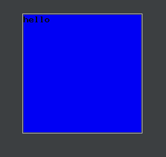
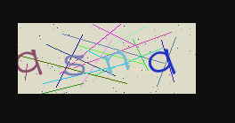
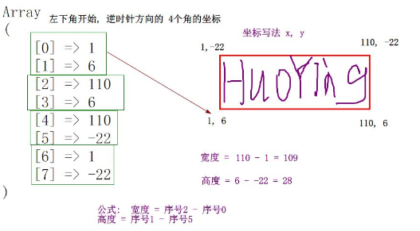
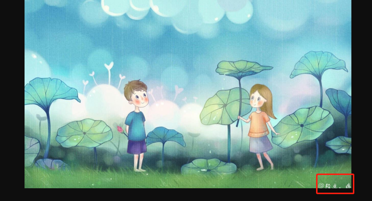
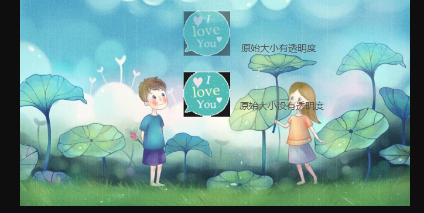
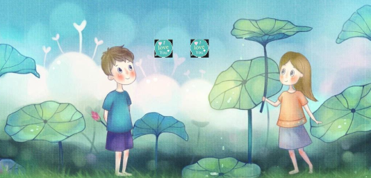
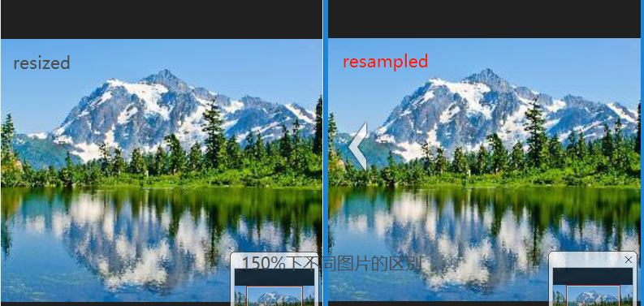

1、生成带有文字的普通图片
// 1、新建空白画布 创建一个真颜色(黑白)的图片
$width = $height = 200;
$img = imagecreatetruecolor($width, $height);
//2、选择一个颜色用于背景
$red = $green = $blue = 244;
$bgc = imagecolorallocate($img, $red, $green, $blue);
//3、将背景颜色填充到画布中,在(0,0)左上角填充
$x = $y = 0;
imagefill($img, $x, $y, $blue);
//4、选择一个颜色用于字符
$cred = $cgreen = $cblue = 7;
$color = imagecolorallocate($img, $cred, $cgreen, $cblue);
//5、选择一个字符串在画布的(0,0)左上角进行绘制颜色为color
$cx = $cy = 0;
$font = 5;//值为1-5
$str = 'hello';//只能输入英文
imagestring($img, $font, $cx, $cy, $str, $color);
//6、把生成好的图片保存
imagepng($img,'image/1.png');
//7、关闭画布
imagedestroy($img);imagefill():将图片填充到画布中的操作类似于在画图工具中使用填充工具将颜色涂满画布，在哪里'点击'都可以，只不过在画布左上角(0,0)上填充最方便。
代码中所有有关颜色的参数都类似于Css中的rgb()属性，其属性值为0~255结果如下：

2、生成复杂验证码图片(有线条和杂点)
//1、建立画布
$img = imagecreatetruecolor('200', '80');
//2、生成并填充背景色
$bgc = imagecolorallocate($img, 220, 220, 200);
imagefill($img, 0, 0, $bgc);
//3、用随机的颜色在随机的位置生成20条线段
for ($i = 0; $i < 20; $i++) {
$x1 = mt_rand(0, 200);
$y1 = mt_rand(0, 80);
$x2 = mt_rand(0, 200);
$y2 = mt_rand(0, 80);
$red = mt_rand(0, 255);
$green = mt_rand(0, 255);
$blue = mt_rand(0, 255);
$color = imagecolorallocate($img, $red, $green, $blue);
imageline($img, $x1, $y1, $x2, $y2, $color);
}
//4、用随机的颜色在随机的位置生成100个像素点
for ($i = 0; $i < 100; $i++) {
$x = mt_rand(0, 200);
$y = mt_rand(0, 80);
$color = imagecolorallocate($img, mt_rand(0, 255), mt_rand(0, 255), mt_rand(0, 255));
imagesetpixel($img, $x, $y, $color);//像素点小可以使用圆
}
//5、用随机的颜色在随机的位置生成验证码文字
for ($i = 0; $i < 4; $i++) {
$size = 80/2;//单位 px 大小为高度的一半
$angle = mt_rand(-30, 30);//水平x轴为0度
$x = $i * 200 / 4;
$y = 80*3/4; //文字左下角为锚点(x,y) x平分画布的宽度，y为画布高度的3/4，
$color = imagecolorallocate($img, mt_rand(0, 255), mt_rand(0, 255), mt_rand(0, 255));
$fontfile = __DIR__ . '/fonts/FZSTK.TTF';//字体文件的绝对路径(必须)，文件大于3M为中文字体文件
$str = 'qwertyuipasdfghjklzxcvbnmQWERTYUIPASDFGHJKLZXCVBNM123456789';
$text = $str[mt_rand(0, strlen($str))];
imagettftext($img, $size, $angle, $x, $y, $color, $fontfile, $text);
}
//6、保存
header("content-type:image/png");//网页内容为图片类型
imagepng($img);//只有第一个参数，不会保存但显示在页面。
//7、销毁
imagedestroy($img);imagepng()有两个参数，第一个参数是处理过后的图片；第二个参数是图片存储的路径和文件名(非必需)，两个参数都有即可保存图片，而只有第一个参数，图片不会保存，但可以立即显示在设备上，
不过要在显示前使用header()重新定义页面内容为图片格式，否则为文本格式会显示出一堆乱码。结果如下：

3、给图片添加文字水印
<?php
//1、导入图片,并计算宽高
$img = imagecreatefromjpeg('image/33.jpg');
$width = imagesx($img);
$height = imagesy($img);
//2,计算文本的宽高
$text = '@轻点，疼';
$fontfile = __DIR__ . '/fonts/FZSTK.TTF';//字体文件的绝对路径(必须)，文件大于3M为中文字体文件
$textinfo = imagettfbbox(20, 0, $fontfile, $text);//返回一个含有8个字段的数组，每两个字段一组，为一个角的x,y;左下-右下-右上-左上
$twidth = $textinfo[2] - $textinfo[0];//文本宽
$theight = $textinfo[1] - $textinfo[5];//文本高
//3、将文本填充进图片右下角
$x = $width - $twidth;
$y = $height;
$color = imagecolorallocate($img, 255, 255, 255);
imagettftext($img, 20, 0, $x, $y, $color, $fontfile, $text);
//4、查看并销毁
header('content-type:image/jpg');
imagejpeg($img);
imagedestroy($img);代码中imagettfbbox()的参数分别为字体大小，角度，字体库文件和字符内容，其中角度以水平x轴为0度，字体库路径必须为绝对路径，如要使用中文，则必须导入中文字体库(一般大于3M)。函数返回值是一个
一维数组，如下所示：
结果如下：

4、将图片内容设为水印添加到其它图片
<?php
$dst_im = imagecreatefromjpeg('image/33.jpg');//背景图片
$src_im = imagecreatefromjpeg('image/22.jpg');//要拼接图片
$dst_x = 537;//从背景图片dst_im的(dst_x,$dst_y)处拼接
$dst_y = 358;
$src_x = 64;//从src_im的(src_x,src_y)处获取宽为src_w，高为src_h的图片
$src_y = 370;
$src_w = 153;
$src_h = 148;
//没有透明度
imagecopy($dst_im, $src_im, $dst_x, $dst_y, $src_x, $src_y, $src_w, $src_h);
//带有透明度
$dst_y-=200;
$pct=50;//透明度 值为1~100 对应透明~不透明
imagecopymerge($dst_im, $src_im, $dst_x, $dst_y, $src_x, $src_y, $src_w, $src_h,$pct);
header('content-type:image/jpg');
imagejpeg($dst_im);
imagedestroy($dst_im);
imagedestroy($src_im);结果如下：

5、将图片进行缩放并显示在原图上
<?php
$dst_im = imagecreatefromjpeg('image/33.jpg');//背景图片
$src_im = imagecreatefromjpeg('image/22.jpg');//要拼接图片
$dst_x = 537;//从背景图片dst_im的(dst_x,$dst_y)处拼接
$dst_y = 358;
$src_x = 64;//从src_im的(src_x,src_y)处获取宽为src_w，高为src_h的图片
$src_y = 370;
$src_w = 153;
$src_h = 148;//缩放前的尺寸
$dst_w=$dst_h=50;//缩放后的尺寸
//1、imagecopyresampled 生成的图片质量更高，处理速度更慢并且占用一定的CPU资源。
imagecopyresampled($dst_im, $src_im, $dst_x, $dst_y, $src_x, $src_y,$dst_w,$dst_h, $src_w, $src_h);
//2、imagecopyresized 缩放图像的算法比较粗糙.处理速度快，只适合不要求清晰度但需要迅速生成缩略图的情况。
$dst_x+=100;
imagecopyresized($dst_im, $src_im, $dst_x, $dst_y, $src_x, $src_y,$dst_w,$dst_h, $src_w, $src_h);
header('content-type:image/jpg');
imagejpeg($dst_im);
imagedestroy($dst_im);
imagedestroy($src_im);结果如下：

6、缩略图
//1、打开原图，获取宽，高
$img=imagecreatefromjpeg('image/11.jpg');
$src_w=imagesx($img);
$src_h=imagesy($img);
//2、设置缩放比例，并创建空白画布
$scale=0.1;
$dst_w=$src_w*$scale;
$dst_h=$src_h*$scale;
$dst_im=imagecreatetruecolor($dst_w,$dst_h);
//3、将原图img的宽高缩放为（dst_w,dst_h）并放置到dst_im上。
imagecopyresampled($dst_im, $img, 0, 0, 0, 0,$dst_w,$dst_h, $src_w, $src_h);
header('content-type:image/jpeg');
imagecopyresized($dst_im, $img, 0, 0, 0, 0,$dst_w,$dst_h, $src_w, $src_h);
imagejpeg($dst_im,'image/resampled.jpg');//文件更小，更清晰
imagejpeg($dst_im,'image/resized.jpg');
imagedestroy($dst_im);
imagedestroy($img);结果如下:
